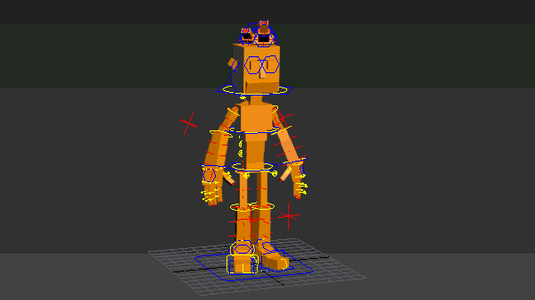
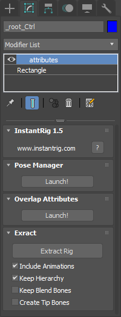

Root¶
Root is the main parent of character. You can rescale or place your character anywhere in the scene.
Root Attributes¶
These attributes can be found in the modifier stack if root controller is selected.
- Pose Manager:
- Starts Pose Manager panel. See Pose Manager.
- Auto Overlap:
- Starts Auto Overlapping panel. See Overlapping Action.
- Extract:
InstantRig allows users to export FBX or any format making possible to use the rigged characters in Unity or other game engines.
- Extract rig:
- It makes rigs down to their deformation bones and bakes their animations.
- Include Animations:
- Bakes animations to extracted bones.
- Keep Hierarchy:
- Keeps parent-child relation between bones. Otherwise all bones stay unparented.
- Keep Blend Bones:
- Keeps blend bones at knees, elbows, wrists and shoulders.
- Create Tip Bones:
- Creates tip bones for every last bone in hierarchy tree.